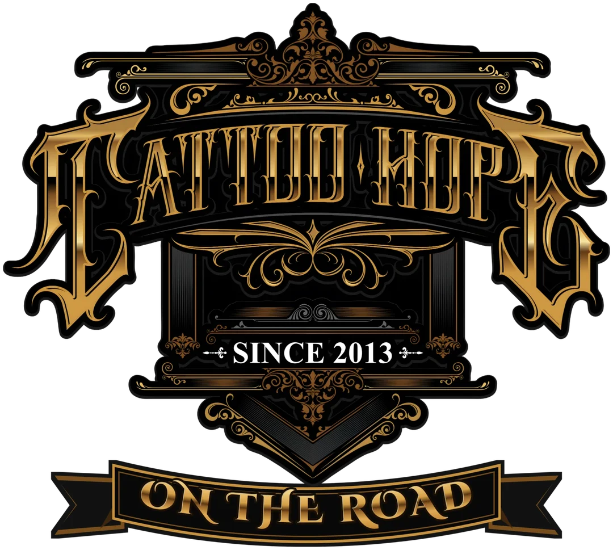
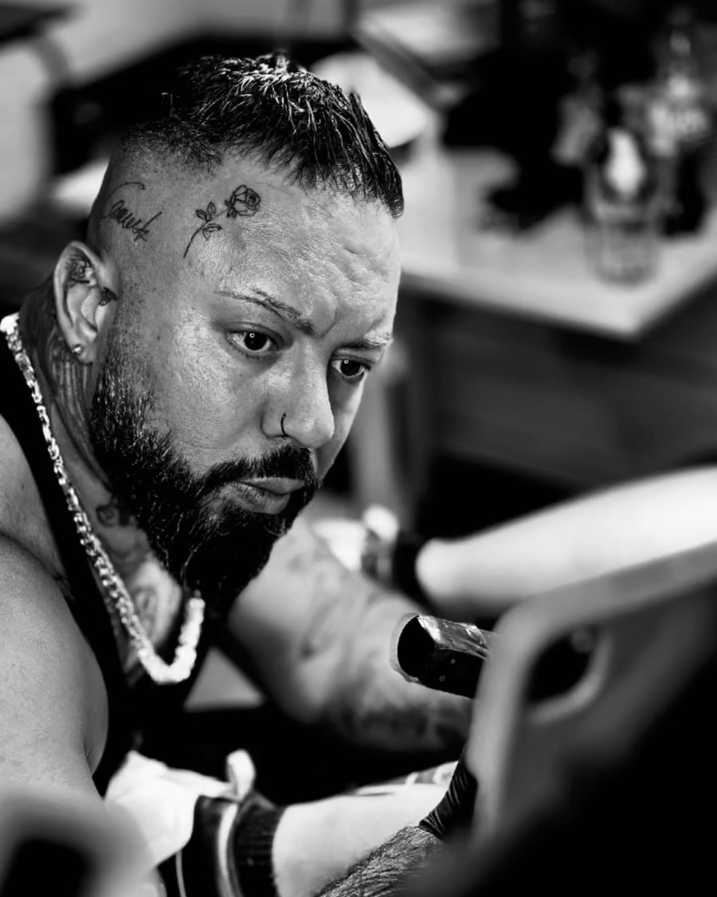
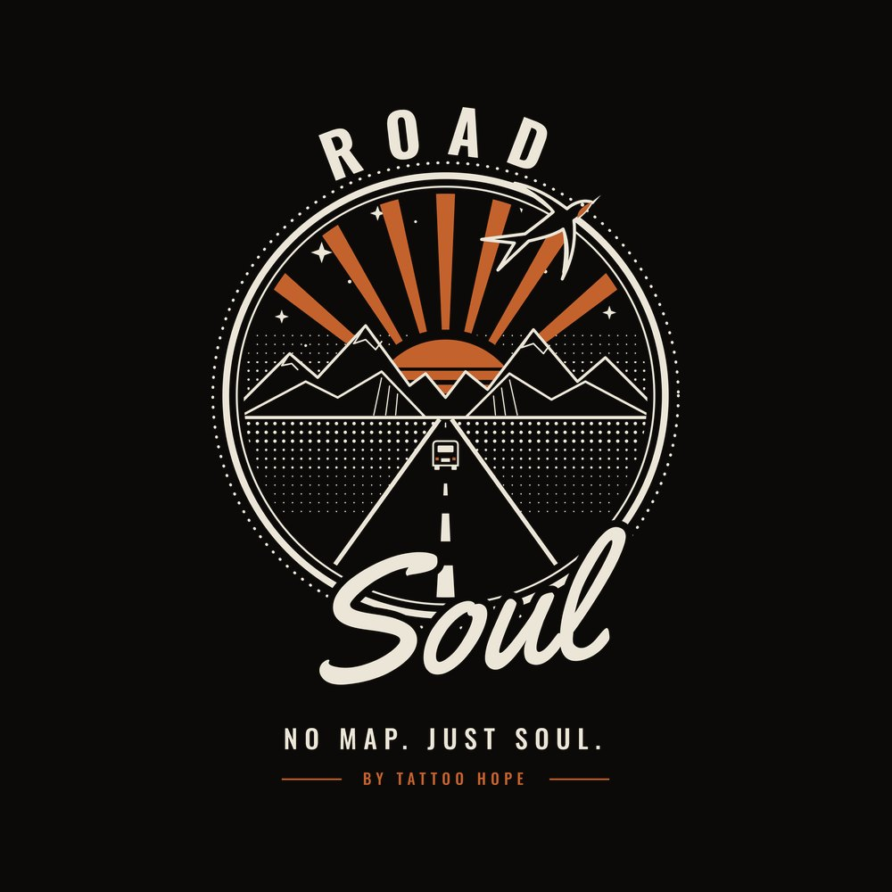

Tattoo Hope on the Road – Tätowierer Ümit Babayigit aus Wuppertal, mobiles Tattoo-Studio seit 2013Ümit tätowiert seit 2013, mit Basis in Wuppertal. Heute fährt das Studio mit: ein selbst umgebautes Wohnmobil, das deutschlandweit unterwegs ist. Black & Grey, Realistik, Coverups und Fine Line, als Unikat für dich gezeichnet.

Arbeiten
Eine Auswahl aus den letzten Monaten. Antippen zum Vergrößern. Mehr gibt es täglich auf Instagram.
Ein Studio, das zu dir kommt
Ümit hat ein Wohnmobil selbst zum Tattoo-Studio umgebaut, mit eigener Liege und allem, was ein sauberes Studio braucht. Damit ist Tattoo Hope deutschlandweit unterwegs und bleibt immer ein paar Tage an einem Ort.
Wo das Mobil gerade steht und wann es freie Termine gibt, steht jeden Tag in den Instagram-Stories.
- Wuppertal
- Hamburg
- Magdeburg
- Darmstadt
- Mannheim
- Würzburg
- Stuttgart
- Bayern
Aktueller Spot: Instagram-Stories @tattoohope
Ümit, Tattoo Hope
Seit 2013 steht Tattoo Hope für Tattoos, die halten, was sie versprechen. Ümit arbeitet am liebsten in Black & Grey, mit Portraits, Tieren, Engeln und Blumen, und rettet alte Tattoos mit durchdachten Coverups.
Jedes Motiv wird für dich gezeichnet. Kein Fließband, sondern ein Termin mit Zeit, auch wenn das Studio auf Rädern steht.

So kommst du zu deinem Tattoo
Anfrage
Schick eine Nachricht per WhatsApp oder Instagram: Motiv-Idee, Körperstelle, ungefähre Größe und gern Beispielbilder.
Entwurf
Ümit zeichnet dein Motiv und spricht Größe, Platzierung und Preis mit dir ab.
Termin
Im Tattoo-Mobil an einem Spot in deiner Nähe oder in Wuppertal.
Pflege
Meist kommt eine Schutzfolie (Second Skin) drauf, die bis zu 5 Tage bleibt. Danach waschen, dünn eincremen, Sonne und Wasser meiden. Alles Weitere steht in der Pflegeanleitung.
Pflegeanleitung zum Mitnehmen
Schritt für Schritt: Schutzfolie, tägliche Pflege, was du meiden solltest und wann du zum Arzt gehst. 2 Seiten, zum Ausdrucken oder fürs Handy.

Shop
ROAD SOUL · Horizon Shirt Neu
Die neue Linie von Tattoo Hope: Straße, Freiheit, Soul. Traditional-Motiv mit Sonne, Bergen, Schwalbe und einem kleinen Camper auf dem Weg zum Horizont. Schwarzes Shirt, vorne bedruckt, im Nacken „by Tattoo Hope“. Jedes Shirt wird erst auf deine Bestellung gedruckt.
29,99 $ Besucher aus Deutschland sehen den Preis im Shop automatisch in Euro.

Der Shop läuft über Fourthwall, einen externen Anbieter. Bestellung, Bezahlung und Versand werden dort abgewickelt.
Termin anfragen
Am schnellsten erreichst du Ümit per WhatsApp oder per Direktnachricht auf Instagram. Freie Termine und den aktuellen Standort findest du in den Instagram-Stories.
Schon bei Ümit gewesen? Bewerte Tattoo Hope auf Google – das hilft neuen Kunden, ihn zu finden. Danke!
Impressum
Angaben gemäß § 5 DDG
Ümit Babayigit
Tattoo Hope on the Road
Buchenstr. 12
42283 Wuppertal
Deutschland
Kontakt
Telefon: 0178 5776262
E-Mail: tatthope@gmail.com
Umsatzsteuer
Kleinunternehmer im Sinne von § 19 UStG. Es wird keine Umsatzsteuer ausgewiesen, eine Umsatzsteuer-Identifikationsnummer ist nicht vorhanden.
Verbraucherstreitbeilegung
Wir sind nicht bereit oder verpflichtet, an Streitbeilegungsverfahren vor einer Verbraucherschlichtungsstelle teilzunehmen.
Haftung für Links
Diese Seite enthält Links zu WhatsApp, Instagram, TikTok, Google Maps und unserem Shop bei Fourthwall. Für deren Inhalte sind ausschließlich die jeweiligen Anbieter verantwortlich. Zum Zeitpunkt der Verlinkung waren keine Rechtsverstöße erkennbar.
Bildrechte
Alle Fotos und das Logo: © Tattoo Hope, Ümit Babayigit. Verwendung nur mit Erlaubnis.
Datenschutzerklärung
1. Verantwortlicher
Ümit Babayigit, Tattoo Hope, Buchenstr. 12, 42283 Wuppertal
Telefon: 0178 5776262 · E-Mail: tatthope@gmail.com
2. Hosting und Server-Logfiles
Diese Website wird über GitHub Pages bereitgestellt, einen Dienst der GitHub, Inc., 88 Colin P. Kelly Jr. Street, San Francisco, CA 94107, USA. Beim Aufruf der Seite verarbeitet GitHub automatisch technische Daten, die dein Browser übermittelt, insbesondere deine IP-Adresse, Datum und Uhrzeit, die aufgerufene Seite sowie Browser und Betriebssystem. GitHub nutzt diese Daten, um die Seite auszuliefern und vor Angriffen zu schützen, und speichert sie nach eigenen Angaben nur so lange, wie es dafür nötig ist. Rechtsgrundlage ist unser berechtigtes Interesse an einem stabilen und sicheren Betrieb der Website (Art. 6 Abs. 1 lit. f DSGVO).
Dabei können Daten in die USA übertragen werden. GitHub ist unter dem EU-US Data Privacy Framework zertifiziert, für das die EU-Kommission ein angemessenes Datenschutzniveau festgestellt hat (Art. 45 DSGVO). Mehr dazu in der Datenschutzerklärung von GitHub: docs.github.com/site-policy/privacy-policies/github-general-privacy-statement
3. Keine Cookies, kein Tracking
Diese Website setzt keine Cookies und nutzt keine Analyse- oder Werbedienste.
4. Schriftarten
Die Schriftarten sind lokal auf dem Server dieser Website gespeichert. Beim Laden der Seite wird keine Verbindung zu Google oder anderen Schrift-Anbietern aufgebaut.
5. Kontakt per E-Mail, Telefon, WhatsApp oder Instagram
Wenn du uns kontaktierst, verarbeiten wir deine Angaben (zum Beispiel Name, Nachricht, Motivwunsch, Fotos), um deine Anfrage zu beantworten und deinen Termin vorzubereiten (Art. 6 Abs. 1 lit. b DSGVO). Wir löschen die Daten, wenn sie dafür nicht mehr gebraucht werden und keine gesetzlichen Aufbewahrungsfristen bestehen. Bei Nachrichten über WhatsApp, Instagram oder TikTok gelten zusätzlich die Datenschutzbestimmungen der WhatsApp Ireland Ltd. beziehungsweise von Meta oder TikTok.
6. Links zu WhatsApp, Instagram, TikTok, Google Maps und zum Shop
Auf dieser Seite sind WhatsApp, Instagram, TikTok, Google Maps und unser Merch-Shop nur verlinkt, nicht eingebettet. Es werden erst Daten an diese Anbieter übertragen, wenn du einen Link anklickst. Danach gelten deren Datenschutzbestimmungen.
Unser Shop wird von Fourthwall, Inc. (USA) betrieben. Bestellung, Bezahlung und Versand laufen vollständig über Fourthwall. Welche Daten dort verarbeitet werden, steht in der Datenschutzerklärung von Fourthwall: fourthwall.com/privacy
7. Deine Rechte
Du hast das Recht auf Auskunft, Berichtigung, Löschung, Einschränkung der Verarbeitung, Datenübertragbarkeit und Widerspruch (Art. 15 bis 21 DSGVO). Schreib dazu einfach an die oben genannte E-Mail-Adresse. Außerdem kannst du dich bei einer Datenschutz-Aufsichtsbehörde beschweren (Art. 77 DSGVO), zum Beispiel bei der für uns zuständigen Landesbeauftragten für Datenschutz und Informationsfreiheit Nordrhein-Westfalen, Kavalleriestraße 2–4, 40213 Düsseldorf.
8. Fotos von Kundinnen und Kunden
Auf dieser Seite zeigen wir Fotos unserer Arbeiten. Wenn du auf einem Foto zu erkennen bist oder dein Tattoo nicht gezeigt werden soll, schreib uns an die oben genannte E-Mail-Adresse. Wir nehmen das Foto dann umgehend herunter (Art. 17 und 21 DSGVO).
Stand: November 2026